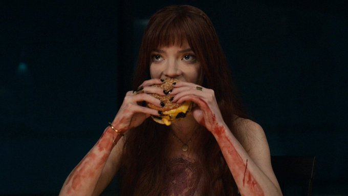

The Menu's Cheeseburger

Description
The cheeseburger made by chef Julian Slowik in The menu.
Ingredients
- Ground beef - 6 oz
- Butter - 1 tbsp
- Yellow american cheese - 2 slices
- Thinly sliced yellow onion - 1 oz
- Buns - 2
- Burger sauce of choice
- Pickles
- Seasoned salt
Steps
- Prep your burger balls
- Put the meat balls in the freezer for 15 minutes.
- Get your buns nice and buttery and toast 'em. Over medium-low heat, melt the butter in your skillet and add the buns, cut side down. Toast them until they turn golden brown, about 2–3 minutes, and reserve until you're ready to plate.
- After wiping out the excess butter and sesame seeds in your skillet, crank up the heat. Like, a lot. You'll want to heat up your skillet to the point that a droplet of water actually beads up and dances around the skillet instead of immediately evaporating,
- Pop your cold burger balls onto your skillet and smash them. No need to add oil!
- Season the raw side of the burgers generously and lay the thinly shaved onions on top of each.
- Once the first sides have been seared for about 2 minutes, you'll flip them.
- Add your American cheese to the top of each burger. To make it just like they did in The Menu, make sure the four corners are slightly hanging off the sides of each patty.
- While the cheese melts, add your pickles to the bottom toasted bun and slather your burger sauce of choice all over the top bun. I used a 1:1 ratio of mayo to ketchup here, and it was delish.
- As soon as the cheese is melted and turning golden brown at the edges, remove them from the skillet and onto your prepped burger bun.
Stack the patties, add the top bun, and you're ready to eat.
source: https://www.buzzfeed.com/rossyoder/the-menu-movie-cheeseburger-recipe